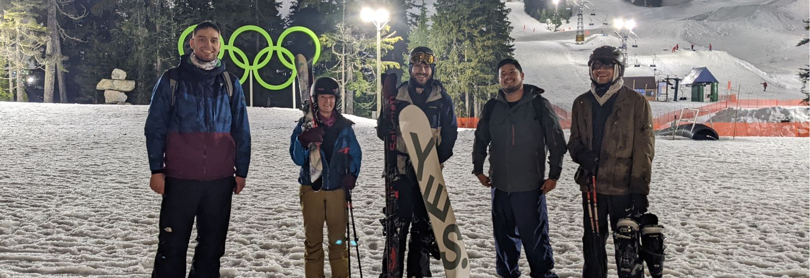

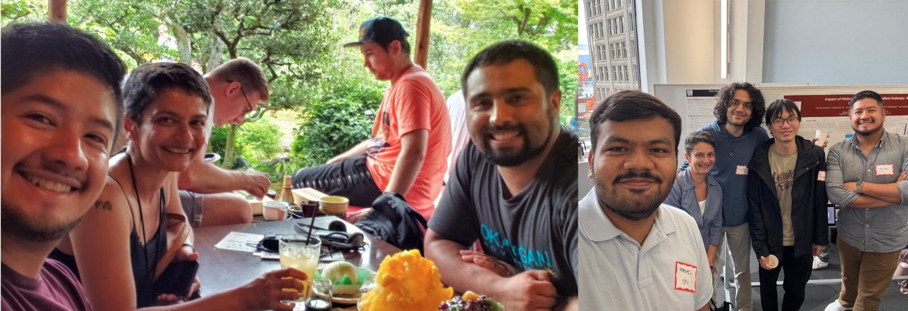
I am a Postdoctoral Research Fellow at the Center for Mathematics and Artificial Intelligence, George Mason University, since July 2026.
I graduated with a PhD in Applied and Computational Mathematics from Simon Fraser University (2025), specializing in the simulation of skeletal muscle deformation. My research focuses on developing advanced numerical algorithms and software to model muscle mechanics, guided by the needs of physiologists and kinesiologists.
I have experience in finite element modeling using deal.II, numerical solver development, and scientific computing in C++, Python, and MATLAB. My work extends from developing theoretical results in numerical analysis of finite element methods, to analyzing muscle force and power generation using electromyography (EMG) and motion-capture data. Additionally, I have contributed to open-source software development in musculoskeletal simulation (check out Flexodeal and the NML's GitHub page). In general, I am passionate about computational modeling, high-performance computing, and interdisciplinary collaboration to solve complex biological and engineering problems.
Current Research
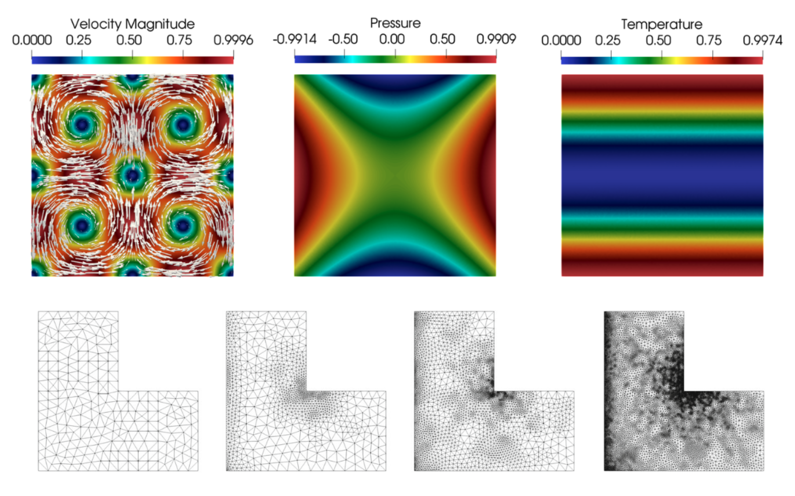
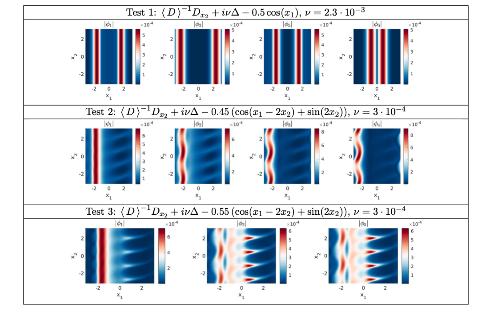
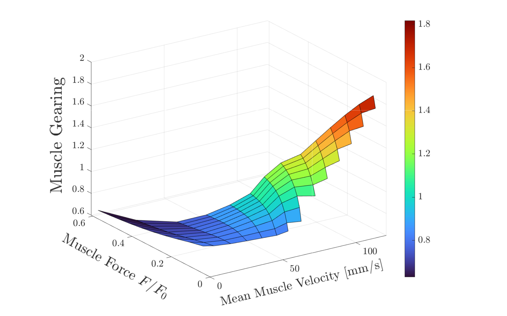
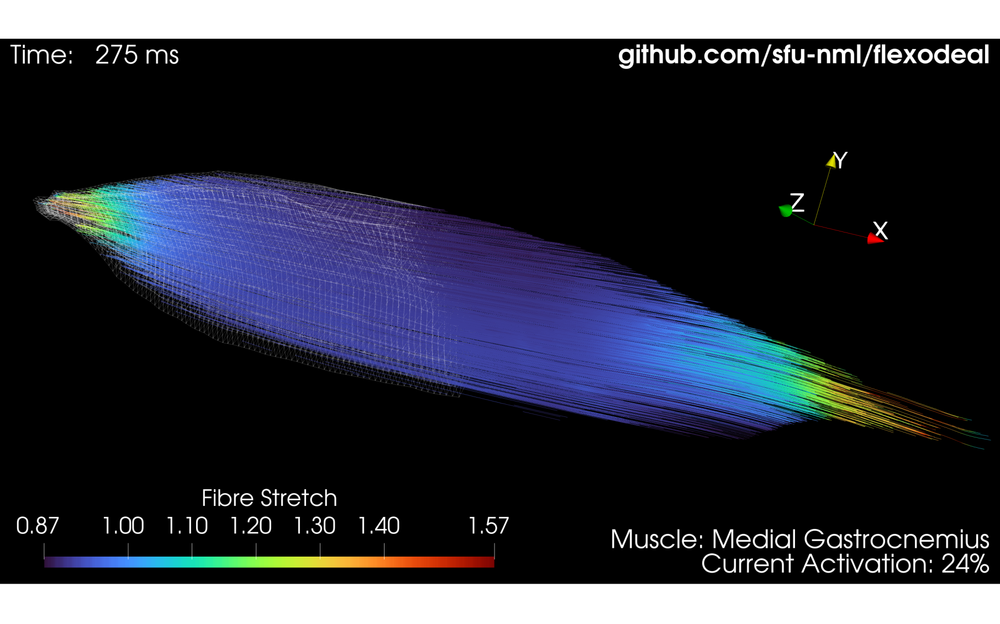
Publications
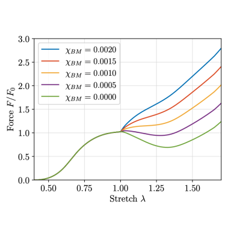 |
J. A. Almonacid, N. Nigam, and J. M. Wakeling. On the dynamical stability of skeletal muscle. [arXiv:2601.05275] (2026). Submitted. |
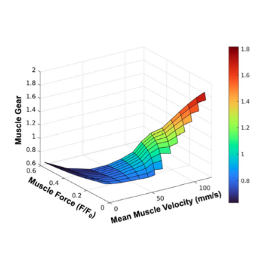 |
M. D. Pinto, J. M. Wakeling, J. A. Almonacid, and A. J. Blazevich. From muscle fibres to muscle gears: How dynamic fascicle orientation and shape change impact skeletal muscle function. Biological Reviews (2026). In press. [BioRxiv preprint] |
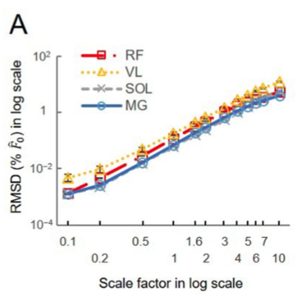 |
I.-J. Chen, A. Latreche, S. A. Ross, J. A. Almonacid, T. J. M. Dick, E. E. Vereecke, and J. M. Wakeling. Effects of muscle mass on force predictions in human movement. Royal Society Open Science 13.8 (2026): rsos251751. https://doi.org/10.1098/rsos.251751 |
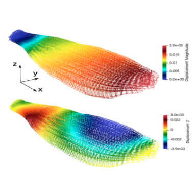 |
J.A. Almonacid, S.A. Dominguez-Rivera, R.N. Konno, N. Nigam, S.A. Ross, C. Tam, and J.M. Wakeling. A three-dimensional model of skeletal muscle tissues. SIAM Journal on Applied Mathematics 84 (2024), no. 3, S538-S566. [arXiv:2207.02421] |
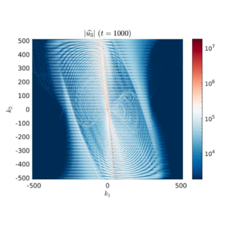 |
J.A. Almonacid and N. Nigam. Characterization of singular flows of zeroth-order pseudo-differential operators via elliptic eigenfunctions: a numerical study. Journal of Computational and Applied Mathematics 438 (2024) 115510. [arXiv:2210.13622] [GitHub Repo] |
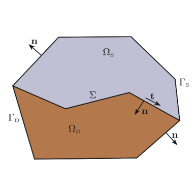 |
J.A. Almonacid, H. Díaz, G.N. Gatica and A. Márquez. A fully-mixed finite element method for the coupling of the Stokes and Darcy-Forchheimer problems. IMA J. Numer. Anal. 40 (2020), no. 2, 1454-1502. |
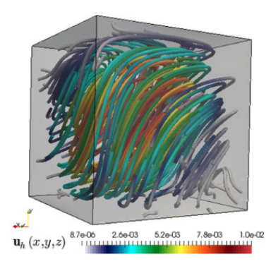 |
J.A. Almonacid, G.N. Gatica and R. Ruiz-Baier. Ultra-weak symmetry of stress for augmented mixed finite element formulations in continuum mechanics. Calcolo 57 (2020), Art. 2. https://doi.org/10.1007/s10092-019-0351-2 |
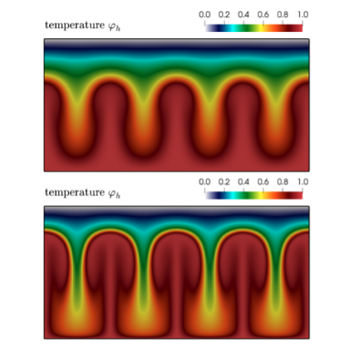 |
J.A. Almonacid, G.N. Gatica, R. Oyarzúa and R. Ruiz-Baier. A new mixed finite element method for the n-dimensional Boussinesq problem with temperature-dependent viscosity. Networks and Heterogeneous Media 15 (2020), no. 2, 215-245. https://doi.org/10.3934/nhm.2020010 |
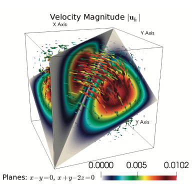 |
J.A. Almonacid and G.N. Gatica. A fully-mixed finite element method for the n-dimensional Boussinesq problem with temperature-dependent parameters. Comput. Meth. Appl. Math. 20 (2020), no. 2, 187-213. |
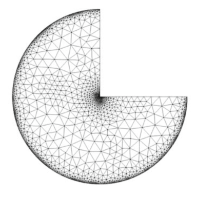 |
J.A. Almonacid, G.N. Gatica and R. Oyarzúa. A posteriori error analysis of a mixed-primal finite element method for the Boussinesq problem with temperature-dependent viscosity. J. Sci. Comput. 78 (2019), no. 2, 887-917. Full-text view-only version: https://rdcu.be/4YAs |
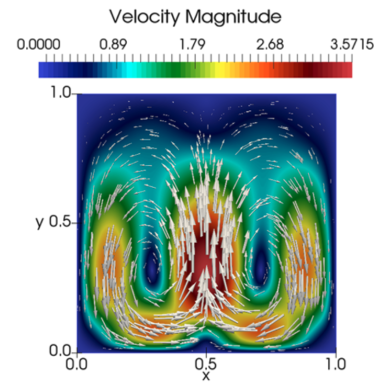 |
J.A. Almonacid, G.N. Gatica and R. Oyarzúa. A mixed-primal finite element method for the Boussinesq problem with temperature-dependent viscosity. Calcolo 55 (2018), no. 3, Art. 36, 42 pp. Full-text view-only version: https://rdcu.be/32pk |
Theses
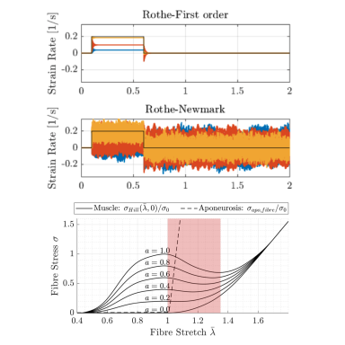 |
Ph.D. Thesis: On the Nonlinear Elastodynamics of Skeletal Muscle. Supervisors: Nilima Nigam (Mathematics) and James Wakeling (Biomedical Physiology and Kinesiology) Simon Fraser University, 2025 [Thesis PDF (pre-defence version)] [Defence Slides] |
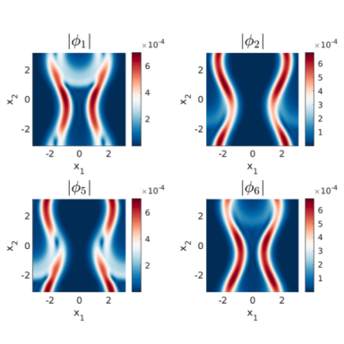 |
M.Sc. Thesis: Internal Wave Attractors and Spectra of Zeroth-order Pseudo-Differential Operators. Supervisors: Nilima Nigam and Weiran Sun (Mathematics) Simon Fraser University, 2020 [Thesis PDF] [Defence Slides] [GitHub] |
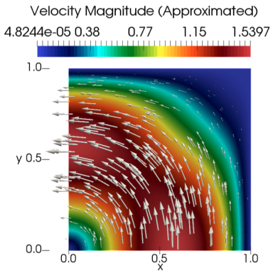 |
B.Sc.Eng. Thesis: Numerical Analysis of a Mixed Finite Element Method for the Boussinesq Problem with Temperature-Dependent Viscosity. Supervisors: Gabriel N. Gatica and Ricardo E. Oyarzúa (Centro de Investigación en Ingeniería Matemática, CI2MA) Universidad de Concepción, 2017 [Thesis PDF] |
Talks & Conferences
- Finite Element Models of Skeletal Muscle: Elastodynamics, Stability, and Beyond, at the CMAI Colloquium, Department of Mathematical Sciences, George Mason University, Fairfax, VA, United States (2026).
- Flexodeal: a new 3D finite element tool for studying musculoskeletal dynamics, at the 19th International Symposium on Computer Methods in Biomechanics and Biomedical Engineering CMBBE 2024, Vancouver, BC. Joint work with the Neuromuscular Mechanics Laboratory.
- Time stepping for nonlinear biological tissues: is first order enough?, at the World Congress on Computational Mechanics WCCM-PANACM 2024, Vancouver, BC. Joint work with Nilima Nigam and James Wakeling.
- Nonlinear three-dimensional elastodynamics of skeletal muscle tissue, at the Cascade RAIN Meeting 2024, Portland, OR, United States. Joint work with Nilima Nigam and James Wakeling.
- Characterization of singular flows of zeroth-order pseudo-differential operators via elliptic eigenfunctions, at the Seventh Workshop on Numerical Analysis of Partial Differential Equations WONAPDE 2024, Concepción, Chile. Joint work with Nilima Nigam.
- Modelling skeletal muscle tissue: three-dimensional dynamical models, at the Fourth Biennial Meeting of SIAM Pacific Northwest Section, Bellingham, WA, United States, 2023. Joint work with the Neuromuscular Mechanics Laboratory at SFU.
- Modelling skeletal muscle tissue: inertial and stability considerations in one-dimensional models, at the Fourth Biennial Meeting of SIAM Pacific Northwest Section, Bellingham, WA, United States, 2023. Joint work with Ing-Jeng Chen, MD, Department of Biology Physiology and Kinesiology, SFU.
- Finite-element discretization of a 3D hyperelastic model of skeletal muscle, at the 2022 CMS Winter Meeting, Toronto, ON, Canada. Co-authors: Neuromuscular Mechanics Laboratory (SFU).
- Turbulence in the air: from data points to a heat map (an IPSW problem), at the 2022 Grad SOCIAL Seminar Series, Department of Mathematics, Simon Fraser University, Vancouver, BC, Canada.
- Singular solutions and the spectrum of a zeroth-order pseudo-differential operator, at the Cascade RAIN Meeting 2020, Corvallis, OR, United States. Virtual Conference. Co-authors: Nilima Nigam (SFU) and Maciej Zworski (UC Berkeley). [PDF]
- Attractors and the spectrum of a zeroth-order pseudo-differential operator, at the Miniconference on Sharp Eigenvalue Estimates for Partial Differential Operators, Urbana, IL, United States. Virtual Conference. Co-authors: Nilima Nigam (SFU) and Maciej Zworski (UC Berkeley). [PDF]
- A posteriori error analysis of a mixed finite element method for nonisothermal flow, at the CAIMS Annual Meeting 2019, Whistler, BC, Canada. Co-authors: Gabriel N. Gatica (UdeC) and Ricardo E. Oyarzúa (UBB).
- Mixed finite element methods for natural convection problems with nonconstant physical properties, at the Young Researchers in Mathematics YRM2018, Southampton, United Kingdom. Co-authors: Gabriel N. Gatica (UdeC), Ricardo E. Oyarzúa (UBB) and Ricardo Ruiz Baier (Oxford).
- A priori error analysis of a mixed-primal formulation for the Boussinesq problem with temperature-dependent viscosity, at the XXVI Congreso de Matemática Capricornio COMCA-2017, Arica, Chile. Co-authors: Gabriel N. Gatica and Ricardo E. Oyarzúa (UBB).
- Research visits experience at SFU: Towards a valid approximation for the Neutron Transport Equation using Regularized Classical Half-Space Equations over the 2D unit disk, at Seminario de Análisis Numérico y Modelación Matemática (GIMNAP-UBB & CI2MA), Concepción, Chile. Joint work with Weiran Sun (SFU).
Mini-symposia Organization
- Advances in Finite Elements & Applications to Solid and Fluid Mechanics, at the 2022 CMS Winter Meeting, Toronto, Canada (2022). Joint organization with Nilima Nigam (SFU).
Posters
- Nonlinear elastodynamics simulations of skeletal muscle tissue, at SFU-UBC Applied Mathematics Day 2024, Simon Fraser University, Vancouver, BC.
- Dynamic effects in nonlinear biological tissues and the Rothe's vs. method of lines dilemma, at Frontiers in Applied & Computational Mathematics (FACM) 2023, New Jersey Institute of Technology, Newark, NJ, United States.
- Importance of mass in muscle models, at SFU BPK Research Day 2023, Burnaby, BC, Canada. Co-authors: Tania B. Gleeson & James M. Wakeling (Department of Biology, Physiology, and Kinesiology (BPK), SFU).
- A parallel finite element solver for hyperelastic deformations, at Third Biennial Meeting of SIAM Pacific Northwest Section 2022, Vancouver, WA, United States.
- High-order discretizations of a linear forced wave equation (Best Poster Award), at Second Biennial Meeting of SIAM Pacific Northwest Section 2019, Seattle, WA, United States. Co-author: Nilima Nigam. [PDF]
Industrial Problem Solving Workshops (IPSWs)
- When the markets create investors: Can account openings be predicted from financial and media signals?, presented by Banque Nationale Courtage Direct at the 16th Montreal Industrial Problem Solving Workshop, 2026, HEC Montréal, Canada.
- Manufacture of contact lenses, presented by Johnson and Johnson Vision Care (Ireland) at the European Study Group with Industry (ESGI) 173, 2023, University of Limerick, Ireland.
- Bubbles in flow streams and porous media, presented by W.L. Gore & Associates, Inc at the Mathematical Problems in Industry (MPI) 2023, New Jersey Institute of Technology, United States.
- Modeling and evaluating risk for fire from rare weather events, presented by Manuchehr Aminian, Cal Poly Pomona, at the Graduate Student Mathematical Modelling Camp (GSMMC) 2023, University of Delaware, United States.
- Turbulence in the air: creating a heat map and building a seasonal diagram, presented by the International Air Transport Association (IATA) at the 12th Montreal Industrial Problem Solving Workshop, 2022, Université de Montréal, Canada.
Contact
jalmonac [at] gmu [dot] eduCenter for Mathematics and Artificial Intelligence
George Mason University
4400 University Drive
Fairfax, Virginia 22030
United States of America